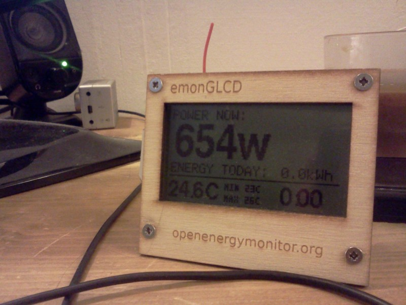

After a couple of weeks regularly unplugging my GLCD, I've finally managed to leave it powered up for a few days. I've noticed today that the cumulative totals for the grid and solar PV generation are way out, looks like they haven't been resetting at midnight.
Sketch running is the most recent one with the PWM fading of the LEDs (which is very nice by the way), I do believe this issue was occuring before the PWM code was introduced, I'm sure I noticed it after I performed the 3.3V mod with the previous sketch running.
Re: GLCD Solar PV sketch cumulative totals wrong
I'm in the same position, but not had time to investigate very far. If the glcd does not get a time update (base unplugged) then it seems they do get reset overnight, if base is running, then it does not reset the daily totals.. I'm not running the latest version, and I don't have 3.3v mod. Strangely, I thought this was working and then it stopped, and I don't remember making any changes.
Lloyd
Re: GLCD Solar PV sketch cumulative totals wrong
Im also seeing this.
It did work for a while but im not sure what made it start and i know at the mo its definatly not working.
Running latest code. With mods
Re: GLCD Solar PV sketch cumulative totals wrong
For the KWh totals to work the time on the emonGLCD needs to be correct. This could come from the emonBase or could be set manually in the sketch. You should be able to check if the time is correct by pressing one the buttons (I think it's the top one). If the emonGLCD is reading the correct power values then the problem is probably due to the emonGLCD not knowing when it's midnight when it needs to reset the KWh counters.
Please let me know if the problem is due to the time issue. I'm not ruling out a bug the crept into the code during one of the last commits. Are you running the latest code?
Re: GLCD Solar PV sketch cumulative totals wrong
I'm using relatively old code. The time is correct, but if it is being regularly updated by emonbase, the totals do not get reset. I'll turn off my emon base tonight and confirm.
Lloyd
Re: GLCD Solar PV sketch cumulative totals wrong
Once again last night, with emonbase off, my totals got reset.
Lloyd
Re: GLCD Solar PV sketch cumulative totals wrong
Right, I think I've found (and fixed) the bug. The problem was with the emonBase code. The current version on GitHub should have fixed the problem. I've simulated midnight but the acid test will come at midnight tonight!
The problem was a line that I added a while back to stop the emonBase sending 00:00:00 to the emonGLCD as this was happening when the server returned a null value. The emonGLCD was getting mistakenly set to midnight when the server did not response. This line was causing 23:59 to be sent continuously until 01:01 which as you experienced resulted in the emonGLCD missing it's trigger at midnight to reset the counters. The problem was I used AND instead of OR! The line now reads:
if (hour>0 || mins>0 || sec>0) then send current time to the emonGLCD
If you update your emonBase to the latest version on GitHub the problem should be fixed: https://github.com/openenergymonitor/NanodeRF/tree/master/NanodeRF_Power_RTCrelay_GLCDtemp
I've also stripped out the RTC library from the emonBase to simplify things, there is no point the emonBase keeping track of time it's self when it receives the correct time from the server every 10's!
Please let me know if this works for you.
Re: GLCD Solar PV sketch cumulative totals wrong
Have retrofitted your changes into the version I'm running, and will let you know how I get on tomorrow.
Lloyd
Re: GLCD Solar PV sketch cumulative totals wrong
Didn't work for me.
Re: GLCD Solar PV sketch cumulative totals wrong
Didn't work well for me either. I'm checking for the colons in the time string, and then assuming that I have valid time. I'll let you know tomorrow how I get on.
Re: GLCD Solar PV sketch cumulative totals wrong
So far so good. Totals reset last night.
Lloyd
Re: GLCD Solar PV sketch cumulative totals wrong
Sorry for the slow response, my emonGLCD got accidently turned off then I have been away. Last night I observed my emonGLCD resetting fine at midnight. Is it working for you now?
I have made a few tweaks to the emonGLCD example code this morning. I've removed 'seconds' to stop the emonBase sending 'seconds' via RF since this was a bit of waste of time and bandwidth. I've also added in the option to set a 'Time Difference' to make the emonGLCD match local time if the emoncms server is not on local time. I know this is something many of you have been added yourselves.
I've also added PWM red LED brightness control into the Home Energy Monitor emonGLCD example. The brightness of the red LED corresponds to the amount of power being consumed. Let me know what you think? It's easy to turn it off if you don't like it!
Re: GLCD Solar PV sketch cumulative totals wrong
Hi Glyn
As I said above, your code did not work for me, the clock was almost permanently being set to 1am. This was as a result of the url not always having valid time data (Each time I post to emoncms I get a number of lines back, only one of which contains the time. This is because I don't use the json url - it was too unreliable.) The code I posted above, where I actually look for the colons in the time string has worked for me for the past two nights, so I will stick with that.
Lloyd
Re: GLCD Solar PV sketch cumulative totals wrong
Ah right, it seems like you have a different problem since your not using JSON. Glad you've solved it.
Is anyone here using the stock github emon example sketches? Is your time resetting correctly?
Re: GLCD Solar PV sketch cumulative totals wrong
I'm using the stock nanodeRF sketch. Time is right on the GLCD, but cumulative totals still aren't resetting.
Well, when I say time is right, time is out one hour due to BST, but that's another issue.
Re: GLCD Solar PV sketch cumulative totals wrong
I've just watched my emonGLCD kWh total reset in front of my eyes!:

I'm running stock emon example sketches straight from GitHub. You need to update both your emonGLCD an NanodeRF sketches. As I explained in the post above the problem was with the NanodeRF code. The latest emonGLCD code has got an option to set a time zone difference. See line 85 in the Home Energy Monitor example.
Re: GLCD Solar PV sketch cumulative totals wrong
Sorry for the late reply. I've reloaded both sketches and cumulative totals seem to reset every night now.
Re: GLCD Solar PV sketch cumulative totals wrong
I can also confirm that its working for me.. with the code from github
Iv only updated the GLCD for info.